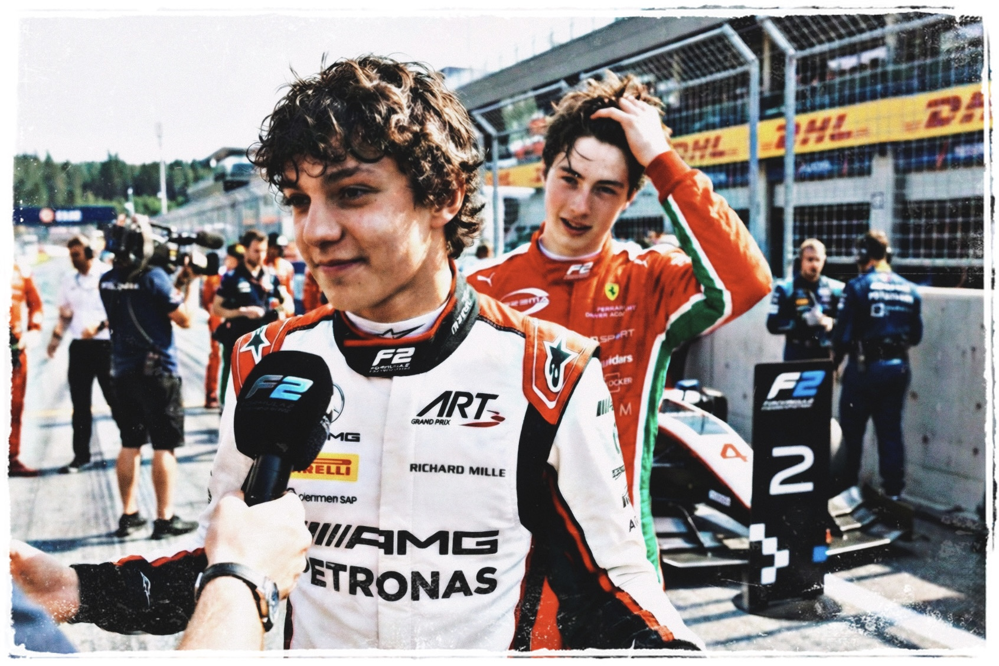
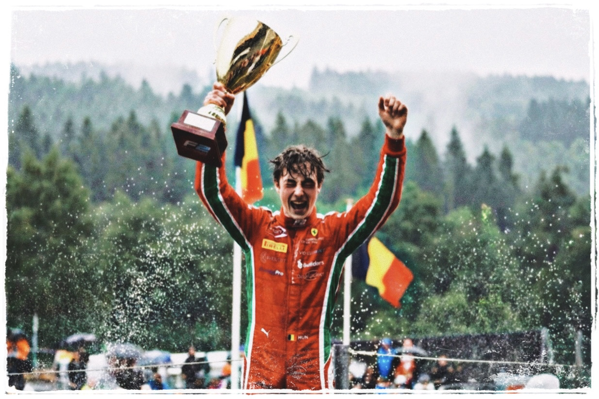
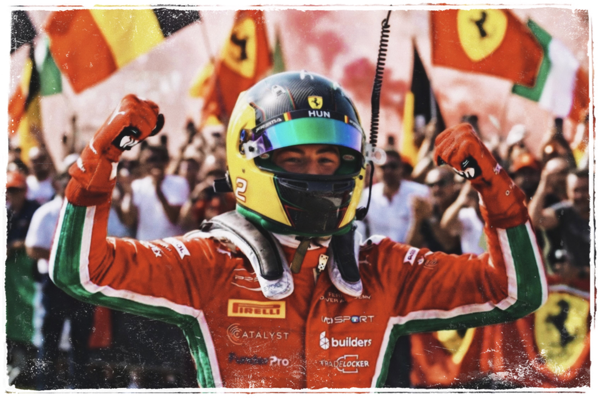

Chapter 4
The Unseen Prodigy
Monaco: the artist between the walls
Monte Carlo arrived like a test that
the universe had written specifically for him.
In Monaco, there is no runoff to save you from ambition.
The barriers are closer than doubt.
It is a tightrope walk over a canyon of jagged steel.
Precision is not an advantage; it is survival.
If Bahrain had shown the world the machine,
Monaco revealed the artist...
While others fought the steering,
Hendryx skimmed between the walls,
close enough to disturb the paint off them.
At the Swimming Pool chicane, he brushed the barrier,
leaving a faint black smear of rubber
like a signature on the wall,
never once breathing the throttle.
The steering inputs were microscopic.
The margins, invisible.
It wasn't just a Pole position;
a four-tenth gap that left the paddock
in a state of collective vertigo.
In Formula 2.
People didn't do that...
Over the radio, his engineer exhaled in disbelief.
"P1, that's P1. Absolutely amazing... great job!!
Where'd you even find that lap?"
Hendryx didn't give an answer.
The race itself was a cage.
Dirty air. Strategy. Safety cars,
compressing tension into something metallic.
He lapped the grid up to P10 at the end.
Not with desperation. Not with reckless lunges.
He waited for hesitation, the half-second
when a driver doubts his braking point,
and slipped into the space as if it
had been reserved for him all along.
Not with sudden divebombs, but with clean, surgical moves:
waiting until the car ahead faltered,
then sliding into the space
like it had always belonged to him.
From the outside, it looked like arrogance.
From behind the wheel, it felt like inevitability.
The headlines multiplied.
"The Project Huntyr"
"The Belgian Bullet"
"Ferrari's Future"
The rivals started speaking differently.

"If he's in your mirrors," Kimi Antonelli said once,
almost shrugging, "you know you're not leading for long."
Isack Hadjar was less diplomatic, with a smug;
"Maybe if he pulls Imola more often,
we would all sleep better, I don't know."
Barcelona: the perfect project
Barcelona removed the poetry from the myth.
Whatever worked here, usually worked everywhere else.
Ferrari engineers trusted it like scripture.
Their favourite measuring stick for raw talent.
Hendryx took pole.
Won the Sprint.
Won the Feature,
and collected the fastest laps in both.
There was no spectacle.
It was worse.
It was clean.
F2 cars are supposed to fight their drivers.
They twitch and slide and argue.
His looked... compliant and logical...
Lap times stacked in unforgiving columns.
No variance, no wild moves, no magic.
Just a human metronome in red and white.
Italian newspapers began printing new phrases:
"Il Progetto Perfetto."
"Il Successore."
"Il Nuovo Sacro Nome."
The Perfect Project.
The Successor.
The New Sacred Name.
Hendryx stopped reading the papers.
The engineers didn't.
Spielberg: the final-lap fight
Spielberg, the Red Bull Ring.
Austria in Formula 2 is rarely elegant.
It had always turned into a knife fight.
No mercy, no breathing space,
just a DRS train of angry junior drivers
trying to out-engineer destiny
with tow games and reckless lunges.
Hendryx was leading until the penultimate lap,
when Antonelli did what every junior
is programmed to do so.
Sending it into Turn 3 with the confidence of someone
who has Toto Wolff on speed dial.
Hendryx lost the spot.
Two laps remained...
Most rookies would settle, bank the points, and call it a day.
But the boy was learning the dark arts now,
the grit behind the geometry, the difference between
winning cleanly and winning inevitably.
He stalked Antonelli through Sector 3 with quiet patience,
studying the braking zones,
feeling the tyre degradation through the wheel.
He waited until the exact millisecond
his rival's rear tyres cried for mercy.
Hendryx stopped seeking the perfect line
and started hunting for the kill.
Into the final lap, the gap was half a car length...
Out of the last corner, they drag-raced toward the line,
both cars unstable, squirming on dead tyres,
and aerodynamics screaming.
With two hundred meters to go, he dipped the front wing
into the slipstream and dragged past by a whisper,
-0.021 seconds, stealing a win off Kimi's plate
like a stray cat taking fish off a dinner table.
Even the commentary had to stop pretending to be neutral:
"He... he stole that. That's just theft.
That's legalized theft at 200 KM/H, ladies and gentlemen!!"
Kimi threw his hands up in the Parc Fermé.
Hendryx just grinned under the helmet.
He was no longer just the metronomic Swiss watch
of the Junior categories.
He showed them that precision wasn't his only weapon.
That he could play that game too, when it mattered...
Silverstone: a masterclass in the rain
Silverstone changed the narrative.
The rain arrived without warning,
swallowing the circuit in grey,
flooding the Wellington Straight
like mother nature herself was testing
who deserved to stay on the track.
Engineers pleaded the Race Control for red flags.
Half the field aquaplaned straight off.
But Hendryx? He wasn't even fazed, he just... transcended.
Three seconds a lap faster than anyone else.
Overtakes executed through spray so thick
the only reference point was the instinct.
Brake markers guessed, grip felt rather than seen.
Someone in the Prema garage was heard muttering:
"Christ... this kid has the DNA."
When he took the chequered flag, soaked and still,
the commentary stopped searching for comparisons.
They stopped asking if he was ready.
They began asking how long he would be allowed to stay.
Budapest: a rare second place
Budapest was the first time anyone
could label a weekend of his as "bad,"
which was hilarious, because "bad"
meant only finishing second...
A strategy blunder had boxed him into traffic
during the feature race, and for fifteen laps
he dismantled the deficit, clawed time back
like a surgeon undoing an earlier mistake.
P2 felt like a funeral...
The Academy bosses called it a "learning moment."
Hendryx logged the data and moved on.
No complaints. No theatrics.
Just the quiet aggression of someone
who understood the long long game.
Spa-Francorchamps: a victory at home
Spa-Francorchamps had never been just a circuit to him.
The Ardennes mist, the smell of wet forest,
the sound of engines echoing off the trees
older than the sport itself.
It was Hendryx's home...
The heavens opened up on the race day.
Visibility dropped to a rumour.
In the spray, the world shrank to the two rain lights
directly in front of you and the courage
you brought to Eau Rouge.
The car compressed against the earth before
climbing back toward the sky.
Most drivers lifted instinctively.
Hendryx did not...
From the cockpit, the world turned into
gradients of grey and pure instinct.
He could barely see the track, but he could feel the grip;
in his fingertips, in the seat,
in the invisible weight transfer
as the car danced from kerb to kerb.
On the penultimate lap, he found himself
tucked under Bortoleto's rear wing,
the Brazilian defending with everything
the soaked circuit would still allow.
Side-by-side through the grey-out of Blanchimont,
the two cars were less like machines
and more like hydroplanes skimming across a lake of glass.
Bortoleto refused to surrender the inside;
Hendryx refused to believe the outside was gone.
Hendryx waited half a heartbeat
longer than expected, long enough
for the Invicta to twitch over the standing water,
then seamlessly straightened his wheel and flowed
around the outside, finding the impossible lower line.
He didn't just take the lead,
he took the air out of the Ardennes.
"He's... done it. Around the outside, in these conditions!!"
The Belgian crowd lost its mind.
They chanted his name with the same passion
they once reserved for other heroes who'd taken
these unforgiving slopes at full commitment.

For the first time, Hendryx allowed himself to feel it.
He belongs here.
Not just in Formula 2.
Not just in the Academy.
On the path.
To the red car...
Monza: the Tifosi’s future
Monza felt like the logical endpoint of everything.
By then, the championship picture was a formality.
Hendryx was so far ahead on points that pundits
had stopped questioning if he'd clinch the title
and started pondering, "when?"
The numbers no longer mattered.
But Monza wasn't about numbers.
Monza was about religion...
The Tifosi arrived as if summoned to ritual.
Banners with his name,
flags with his face, horns, flares.
Old men in faded Schumacher caps stood
shoulder to shoulder with teenagers in Leclerc shirts.
They didn't chant "Huntyr," not yet.
"IL RAGAZZO BELGA!!"
"The Belgian Boy."
And that was enough...
Qualifying was chaos incarnate...
Tow after tow, games in the final corner, traffic train politics.
Somehow, he still extracted a lap
that put him on the front row.
The race was on knife-edge.
Slipstream battles down the main straight,
late lunges into Turn 1, DRS trains refusing to break
But Hendryx had learned something since Imola.
When he hit the front this time,
extra tenths was no suggestion.
He only went hunting for calm.
He managed the tyres. He backed off when he needed.
He defended when he had to, clean but absolute.
Through the Curva Grande, the wind buffeted his helmet,
a constant reminder of the blinding speed
of the reality he was living in.
Behind him, the chasing pack was a swarm of angry hornets,
their engines screaming for a mistake that never came.
He could see the flares already
being lit in the stands at the Parabolica.
Crimson smoke drifting across the track like a heavy mist.
He didn't look at the gap on his steering wheel anymore.
He didn't need a delta to tell him he was in control.
He was driving by feel, dancing the car across
the serrated exit kerbs of Ascari
with a precision that felt almost surgical.
No theatrics, no kerbs eaten for the sake of a story.
Just ruthlessness in measured doses.
The Tifosi's roar was a baptism of red noise.
A congregation waiting for their Messiah.
When he crossed the line to win in front of the home crowd
of the team that owned his future, the noise was primeval.
It wasn't just a cheer.
It was a claim...
It was the sound of a hundred thousand people
realizing that they didn't just have a driver.
They had a king in waiting...

He stood atop the chassis, a splash of foreign colors
against a tidal wave of scarlet.
Fists were clenched tight,
drawing the thunderous weight into his own lungs.
Scarlet flags turned the main straight
into a blood-red river. Flares painted the air.
Commentators nearly ruptured their vocal cords.
Sounds rose, sweeping like wildfire.
A deafening pulse that shook
the very foundations of the grandstands.
"IL NOSTRO RAGAZZO!!
IL NOSTRO FUTURO!!"
"Our boy, our future..."
As he jumped down from the car,
his boots hitting the hot asphalt,
the world was a blur of mechanics and camera lenses.
In the middle of the scrum,
when the champagne still yet to be sprayed,
a familiar face from the Ferrari Academy,
grabbed him by the shoulders.
The man had to shout over the deafening roar of the Tifosi.
"Complimenti, Hendryx. Enjoy this one.
Monza is special... and it won't be your last time here."
Hendryx pulled his helmet off,
the sweat cooling in the Italian breeze,
and allowed himself to absorb it...
He didn't need to say a single word.
He tilted his head back,
closed his eyes for a second,
letting the vibration an endless,
scarlet tide settle into his bones.
Of course he would come back.
Of course he would return in red.
Anything else would have been absurd.
It was a heresy he couldn't even imagine...